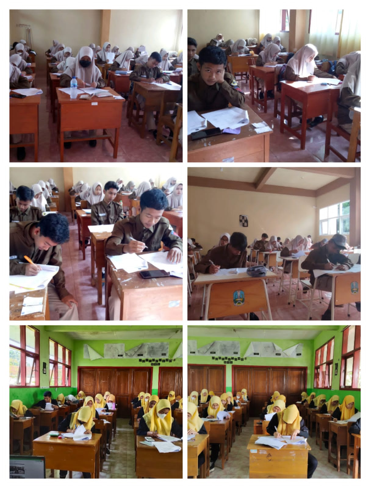
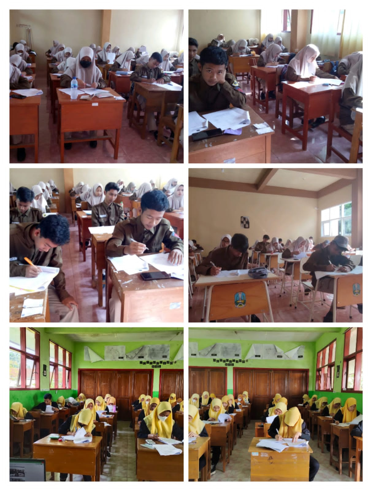

JURUSAN AKUNTANSI

•JURUSAN
Mempelajari akuntansi mencakup pembelajaran tentang keuangan, pelaporan informasi keuangan organisasi, dan akuntansi manajerial. Penggunaan data itu untuk mengukur kinerja entitas dan menginformasikan keputusan tentang masa depan dan kontrolnya. Jurusan akuntansi mempelajari bagaimana catatan keuangan perusahaan disiapkan dan dipelihara. Ia mempelajari perpajakan, audit, dan pelaporan keuangan.
•PROSPEK KERJA
beberapa prospek kerja untuk jurusan akuntansi:
1. Akuntan
2.Akuntan publik
3.Accounting manager
4.Account officer
5.Akuntan pajak
6.Accounting software developer
7.cost accountant
•LAMPIRAN
potret beberapa foto praktek jurusan tata boga :

 
